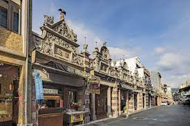

大溪是桃園最早發展的地方，透過大漢溪小帆船行駛淡水河，與大陸貿易興盛，造就了許多商號與商賈。日治大正時代流行巴洛克建築風格，和平路、中山路等老街，各商號融合巴洛克式繁飾主義和閩南傳統裝飾圖案，包括希臘山頭、羅馬柱子和中式的魚、蝙蝠等祈求吉慶的圖案混合，形成一種大溪專有的特色。和平老街因為開發較晚，老屋的保存狀況也較好，街上特色商店林立，十分熱鬧。大溪老街週邊有大溪橋、李騰芳古宅、寺廟古蹟、武德殿文化古蹟及大溪木藝生態博物館等知名景點，當然更要品嚐老街上傳統的台灣古早味小吃、體驗台灣童玩，尤其是大溪豆干、月光餅、花生糖、豆花、碗粿、湯圓等，都是不容錯過的台灣道地美食！絕對是來到桃園，感受道地台灣味必去的景點之一！
